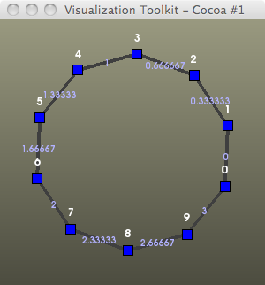

Graphs in VTK
Rf. Examples/Infovis/Python/graph* - tweaking to get graph2.py:
from vtk import *
#------------------------------------------------------------------------------
# Script Entry Point
#------------------------------------------------------------------------------
if __name__ == "__main__":
print "vtkGraph Example 2: Building a vtkMutableDirectedGraph from scratch."
# Create an empty graph
G = vtkMutableDirectedGraph()
# Create an integer array to store vertex id data.
vertID = vtkIntArray()
vertID.SetName("ID")
# Link the vertex id array into the vertex data of the graph
G.GetVertexData().AddArray( vertID )
# Add some vertices
for i in range(10):
G.AddVertex()
vertID.InsertNextValue(i)
edgeID = vtkFloatArray()
edgeID.SetName("Weight")
G.GetEdgeData().AddArray( edgeID )
# Add some edges in a ring
for i in range(10):
G.AddGraphEdge(i, (i+1)%10)
edgeID.InsertNextValue(float(i)/3.0)
#----------------------------------------------------------
# Draw the graph in a window
view = vtkGraphLayoutView()
view.AddRepresentationFromInputConnection(G.GetProducerPort())
view.SetVertexLabelArrayName("ID")
view.SetVertexLabelVisibility(True)
view.SetEdgeLabelArrayName("Weight")
view.SetEdgeLabelVisibility(True)
#view.SetEdgeVisibility(False)
view.SetLayoutStrategyToSimple2D()
view.SetLayoutStrategyToForceDirected()
#view.SetLayoutStrategyToCone()
view.SetVertexLabelFontSize(20)
view.SetEdgeLabelFontSize(20)
theme = vtkViewTheme.CreateMellowTheme()
theme.SetLineWidth(4)
theme.SetPointSize(10)
theme.SetCellOpacity(1)
view.ApplyViewTheme(theme)
theme.FastDelete()
view.GetRenderWindow().SetSize(600, 600)
view.ResetCamera()
view.Render()
gw=vtkGraphWriter()
fname = 'g2.vtk'
gw.SetFileName(fname)
#gw.SetFileTypeToBinary()
gw.SetInput(G)
gw.Write()
print '---> ',fname
view.GetInteractor().Start()
print "vtkGraph Example 2: Finished."
g2.vtk:
# vtk DataFile Version 3.0
vtk output
ASCII
DATASET DIRECTED_GRAPH
POINTS 10 float
0 0 0 0 0 0 0 0 0
0 0 0 0 0 0 0 0 0
0 0 0 0 0 0 0 0 0
0 0 0
VERTICES 10
EDGES 10
0 1
1 2
2 3
3 4
4 5
5 6
6 7
7 8
8 9
9 0
EDGE_DATA 10
FIELD FieldData 1
Weight 1 10 float
0 0.333333 0.666667 1 1.33333 1.66667 2 2.33333 2.66667
3
VERTEX_DATA 10
FIELD FieldData 1
ID 1 10 int
0 1 2 3 4 5 6 7 8
9

Randy Heiland